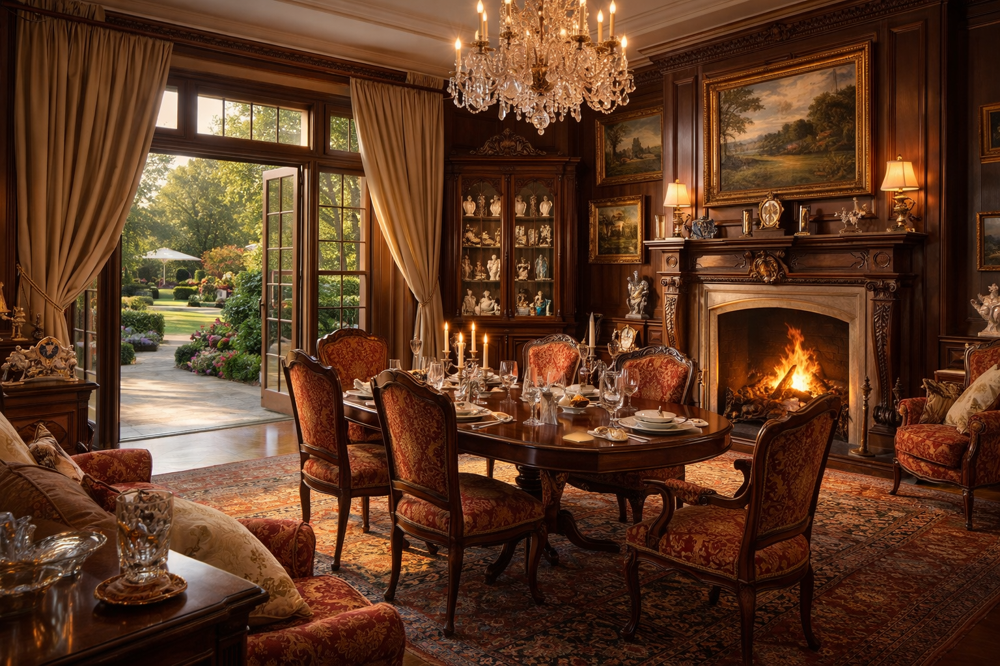

El señor Arturo Gonsález vive en una casa grande no muy lejos de la ciudad. La casa está en
un lugar muy
tranquilo, en el bosque. Para entrar en la casa hay que pasar por unas puertas antiguas. Siempre están
abiertas, pero en la entrada hay seguridad las veinticuatro horas. Delante de la casa hay un patio
grande y detrás hay un jardín. En el jardín, entre los árboles, hay una piscina bastante grande y una
zona de descanso.
La casa tiene dos pisos. En la planta baja hay un recibidor. Desde allí puedes ir a la cocina, al
comedor y a la biblioteca. También hay una habitación pequeña pero bonita. Allí vive Pedro García, el
mayordomo del señor Gonsález.
Actividades
Completa la descripción.
Dibuja el plano.
Elige un punto y di adónde puedes ir.

El comedor también es la sala de estar. Es una habitación grande y bonita, con ventanas enormes y
salida al patio, desde donde se puede ir directamente al jardín. Cuando hace buen tiempo, el señor
Gonsález almuerza y cena en el patio. Pero cuando hace frío, come en el comedor, cerca de una gran
chimenea. Al señor Gonsález le gustan los muebles antiguos, los cuadros y las estatuillas, por eso en el
comedor hay una vitrina grande con piezas interesantes. Siempre busca y compra algo, y también vende
algunas cosas. Siempre tiene suerte en el negocio.
La biblioteca también tiene salida directa al jardín. No es una habitación muy grande. En el centro hay
un escritorio antiguo de madera, y a lo largo de las paredes hay estanterías con libros.
También hay una chimenea. El señor Gonsález usa la biblioteca como despacho o lee allí por las noches
junto al fuego.
En el primer piso hay dormitorios. Está el dormitorio del señor Gonsález, los dormitorios
de sus dos hijos y dos habitaciones para invitados.
Actividades
Describe la cocina o la habitación de Pedro García.
Elige tu lugar favorito en la planta baja. ¿Por qué?
El señor Gonsález tiene sesenta y un años. Es alto, delgado y todavía bastante guapo. Tiene el pelo
gris, no lleva barba ni bigote y usa gafas solo cuando lee.
El señor Gonsález vive solo, aparte de Pedro García. Su esposa murió hace algunos años. Fue un accidente
trágico y ella era todavía muy joven.
Pero el señor Gonsález tiene dos hijos adultos de su primer matrimonio. Su primera esposa también murió
de forma trágica, pero ya pasaron muchos años.
El hijo mayor, Rodrigo, es un arquitecto de éxito. Tiene su propia empresa y vive en la ciudad. Tiene
cuarenta años. Es alto y delgado como su padre, pero no es guapo. El padre está muy orgulloso de
Rodrigo.
El hijo menor, Ignacio, tiene treinta y tres años. Es pintor, muy talentoso, pero no sabe vender sus
cuadros. Nunca tiene dinero y se lo pide siempre a su padre o a su hermano, y luego lo gasta en
cosas
inútiles.
Hoy los dos hermanos llegan a la casa de su padre.
Actividades
¿Quién es el señor Gonsález?
Describe los hermanos de una manera más detallada.
La empresa de Rodrigo tiene un período difícil. No quiere decirselo a su padre, pero necesita dinero.
Quiere proponerle un proyecto conjunto sin explicar cuánto necesita su ayuda. No está contento de ver a
Ignacio. Ignacio siempre viene para pedir dinero y el padre siempre se lo da. Rodrigo no quiere
competencia.
Ignacio ha llegado un poco antes. Ya ha hablado con su padre y, de forma inesperada, el padre le ha
dicho que no. Ignacio está muy triste, pero quiere quedarse a cenar. Pedro García cocina muy bien.
Ignacio no quiere decirle a Rodrigo que el padre no le ha dado dinero.
Actividades
¿Por qué Ignacio no quiere decirle a Rodrigo que el padre no le ha dado dinero? ¿Cómo se siente?
¿Qué pasó en la empresa de Rodrigo?
El señor Gonsález informa que a la cena va a venir otra persona. Se llama Juan Sánchez. Es
experto en arte
y quiere comprar una de las estatuillas del señor Gonsález.
Es una estatuilla de gato de cristal muy bonita, del tamaño de un gato real. Brilla mucho y dicen que un
joyero muy famoso la hizo hace doscientos años. Es muy cara. El señor Sánchez está listo para pagar un
precio alto, pero pidió primero una evaluación de un experto independiente. El informe llega un poco
tarde, casi a la hora de la cena, cuando el señor Sánchez ya está en la casa. Por eso todos deciden
hablar de negocios mañana y hoy disfrutar de la cena que preparó Pedro García.
Hace fresco afuera, así que cenan en el comedor.
Cuando el señor Sánchez entra del jardín en el comedor, casi rompe la puerta de vidrio. Está tan limpia
que no la vio y trató de pasar a través de ella. El señor González dice que él también siempre teme
hacer lo mismo. Pedro García limpia muy bien. Todos rien y van a cenar. El señor González pone el
informe del valor de la estatuilla junto al Gato, que está sobre la chimenea y parece mirarlos. Después
de la cena todos van a sus dormitorios porque están cansados y al día siguiente tienen mucho trabajo.
Actividades
¿Qué ha preparado Pedro García para la cena?
¿Qué va a pasar luego?
Por la mañana, antes del desayuno, el señor Sánchez se acerca a la chimenea. Sobre la chimenea no están
el Gato ni el informe.
El informe, dice el señor González, está en la biblioteca, porque él lo llevó allí después de la
cena. Pero el Gato no está en ninguna parte. Desapareció.
Después de buscar sin éxito, el señor González llama a la policía, que llega enseguida. El inspector
Martínez empieza a trabajar con atención. Nadie salió de la casa ni entró después de la cena. El Gato
probablemente todavía está dentro
El señor Gonsález no puede creer que alguien presente haya robado el Gato. No puede ser.
Los hombres del inspector empiezan una búsqueda en la casa.
Sin embargo, el inspector Martínez empieza a hacer preguntas.
Actividades
¿Cómo es el inspector Martínez?
Eres el inspector Martínez. Interroga al señor González, al señor Sánchez, a Rodrigo y a
Ignacio. Haz preguntas claras para descubrir la verdad.
Después de hablar con el señor González, el señor Sánchez, Rodrigo e Ignacio el inspector
Martínez llama a Pedro García. Haz preguntas a Pedro García
A las once todos se fueron a dormir. Él limpió rápidamente el comedor y la cocina y se acostó a las once
y media, y se durmió enseguida. Sí, siempre se duerme rápido.
Pero después de algún tiempo se despertó. Le pareció que alguien bajaba por la escalera. No, no sabe
quién era. No, no miró el reloj.
Se durmió otra vez inmediatamente, pero después de algún tiempo se despertó de nuevo. Otra vez oyó
pasos. Esta vez sí miró el reloj: eran las 01:50. Abrió un poco la puerta y vio que alguien entraba en
la cocina. No sabe quién era.
Se acostó y, como siempre, se durmió enseguida, pero se despertó una vez más. Abrió otra vez la puerta y
vio a Rodrigo en el recibidor. No sabe de dónde salió Rodrigo: de la cocina, de la biblioteca o del
comedor. Rodrigo no vio a Pedro García.
Los hombres del inspector terminan la primera búsqueda de la casa. No encuentran el Gato, pero
encuentran el informe en la biblioteca, dentro de una cajita cerrada sobre la mesa justo come dijo el
dueño de la casa. El Gato es muy valioso.
El inspector vuelve a preguntar a Rodrigo.
Actividades
Interroga a Rodrigo otra vez
Rodrigo admite que salió de su habitación. Mintió porque la verdad parecía sospechosa. No durmió y bajó
a la biblioteca a trabajar con documentos de su empresa. Bajó a la una y media y volvió a su habitación
a las dos y veinte. A las dos en punto oyó un ruido detrás de la puerta. Sí miró el reloj.
El inspector no entiende nada. En la casa hay cuatro personas y nadie duerme por la noches
Vuelve a interrogar al invitado.
Actividades
Interroga al señor Sánchez otra vez.
El señor Sánchez reconoce que, en efecto, bajó. Le da vergüenza contarlo, pero ahora el asunto es serio.
Se despertó a la una y media y quiso comer un pastel. El pastel era muy grande y estaba muy rico. Comió
dos trozos en la cena y no se atrevió a comer más. Pero si por la noche comía un trozo, nadie lo sabría,
todavía quedaba mucho. Le pareció que oyó pasos, pero no estaba seguro. Por fin, hacia la una y cuarenta
y cinco, para ser exactos a la 1:47, miró el reloj, se levantó y bajó a la cocina. Había mucho pastel y
pensó en tomar dos trozos, pero pensó que eso era demasiado evidente y decidió comer uno. Dudó en comer
el trozo allí mismo, pero decidió que era sería mejor llevarlo arriba. Unos diez minutos después, aunque
no miró el reloj, estaba en su habitación, comíó el pastel y no oyó nada más.
El inspector Martínez vuelve a hablar con Ignacio.
Actividades
Interroga a Ignacio otra vez.
Ignacio realmente bajó a la cocina por la noche. ¡Qué sorpresa! Quiso comer un trozo de pastel. Bajó a
la una y cincuenta, miró el reloj. Bebió té, comió el pastel y a las dos y diez volvió a su habitación.
Oyó pasos hacía las dos, pero no sabía de quién eran.
El inspector Martínez no entiende nada. El señor Sánchez e Ignacio fueron a la cocina al mismo tiempo
para comer pastel, pero no se vieron. Uno de los dos miente.
Actividades
Hay que descubrir quien miente. Habla con Pedro García, Ignacio el señor Sánchez.
Pedro García confirma que hay dos trozos menos de
pastel que por la noche. Sí, los contó. El señor Sánchez jura que por la noche comió uno. También jura
que no vio a Ignacio. Ignacio afirma que fue a la
cocina y comió pastel con té. ¡Pedro García está muy sorprendido! No hay té en casa. Se terminó el día
anterior y Pedro García no tuvo tiempo de comprarlo. Ignacio miente.
El inspector Martínez pregunta a Ignacio otra vez más.
Actividades
Interroga a Ignacio otra vez.
Ignacio reconoce que a la una y cuarenta y cinco, y sí miró el reloj, fue al comedor. Quería saber
cuánto costaba el Gato. Estaba curioso. Su padre rechazó a ayudarlo y dijo que no tenía dinero. Tuvo
miedo de encender la luz, así que buscó el documento con una linterna un rato. Pero después comprendió
que el documento no estaba. ¡Y el Gato tampoco estaba! Salió del comedor, oyó pasos en la escalera (el
inspector Martínez comprende que era el señor Sánchez que subía con el pastel a su habitación) y se
escondió en la cocina. Estaba nervioso y triste, así que comió un trozo de pastel y a las dos y diez,
miró el reloj, subió a su habitación.
El inspector Martínez está listo para continuar las preguntas, pero en ese momento sus hombres informan
que está discubierto un otro informe sobre el valor del Gato. En el antiguo escritorio de la biblioteca
hay un cajón secreto. Lo abrieron y encontraron un segundo informe muy parecido al primero. Pero en él
dice que el Gato no es de cristal de hace doscientos años, sino de vidrio moderno. Es una falsificación
y no vale nada, aunque sigue siendo bastante bonito. El señor Sánchez está en choque. Estaba dispuesto
para pagar una enorme cantidad de dinero por él.
Actividades
Habla con el señor Gonsález.
El señor González reconoce que falsificó el informe. Bajó a la biblioteca a la una de la noche. Esos
fueron los pasos que oyó Pedro García la primera vez. A la una y cuarenta el dueño de la casa salió de
la biblioteca y volvió a su dormitorio. Se durmió inmediatamente y no vio ni oyó nada.
Actividades
¿Quién es culpable?.
Todos miran a Rodrigo. Él no pudo ir a la biblioteca a trabajar con documentos, porque en ese momento el
señor González estába allí. ¡Rodrigo es culpable! Pero ¿qué hizo con el Gato? ¿Cómo lo escondió?
Buscaron por toda la casa y el jardín ya dos veces.
Actividades
¿Dónde está el Gato?.
«Lo miramos y no lo vemos», dice pensando el inspector Martínez.
“Como la puerta de vidrio”, dice el señor Sanchez.
Todos tienen la misma idea al mismo tiempo. Se acercan a la piscina. Parece vacia, pero ya saben que hay
dentro. A pesar del día fresco, uno de los policías salta al agua y después de cinco minutos saca de la
piscina el Gato hermoso e inútil.